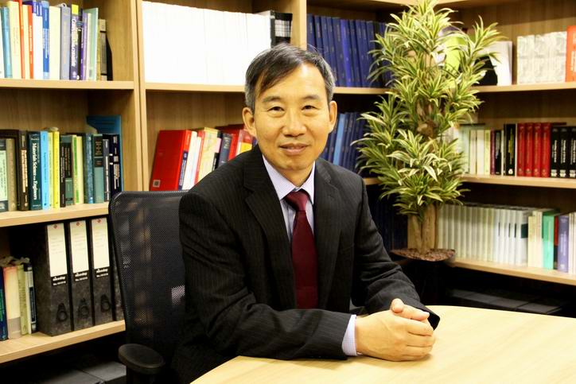
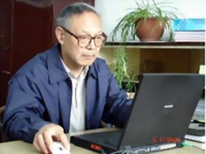

会议主席简介

Professor Jianguo Lin, Fellow of Royal Academy of Engineering (FREng), is a TATA Steel and Royal Academy of Engineering Research Chair and Head of Mechanics of Materials Division, Department of Mechanical Engineering, Imperial College London, UK. He is the Director of AVIC Centre for structural design and manufacture, Director of AVIC Centre for materials characterisation, processing and modelling, Director of CALT Advanced Manufacturing Laboratory.
Professor Lin's research expertise is in Materials and Process modelling, Solid/Computational Mechanics, which includes micro-mechanics modelling, and its application in creep-damage, cyclic-plasticity-damage, viscoplasticity and advanced materials processing technologies.
He joined Imperial College from the University of Birmingham in 2008 and established a Metal-forming and Materials Modelling Group at Imperial. The Group has an international reputation in developing new metal forming processes, multiscale materials and process modelling. Specifically, the Group have patented new hot stamping processes for Steel and Aluminium. He is a Founder and the Director of Impression Technologies Ltd (a Spin-off company of Imperial College), which is resulted from one of his patented techniques on hot stamping of high strength aluminium alloys.
 Professor Hodgson spent 16 years in the BHP Research Laboratories before joining Deakin University in 1996. Prior to joining Deakin his main areas of research were thermomechanical processing of steels, microstructure modelling and new alloy and process developments. Since joining Deakin his research has broadened to include sheet metal forming, the forming and post forming behaviour of advanced high strength steels, nanostructured metals, biomaterials and surface engineering. He has over 700 research publications and has presented more than 50 keynote lectures at international conferences related to the physical metallurgy and modelling of steels. In 2004 Professor Hodgson was made one of the inaugural Alfred Deakin Professors and also awarded a Federation Fellowship from the Australian Research Council. He received a Doctoris Honoris Causa from the University of Valenciennes in France for contributions to metal forming in 2005 and a Faculty Medal from AGH Poland in 2006 for contributions to Materials Science.
Professor Hodgson spent 16 years in the BHP Research Laboratories before joining Deakin University in 1996. Prior to joining Deakin his main areas of research were thermomechanical processing of steels, microstructure modelling and new alloy and process developments. Since joining Deakin his research has broadened to include sheet metal forming, the forming and post forming behaviour of advanced high strength steels, nanostructured metals, biomaterials and surface engineering. He has over 700 research publications and has presented more than 50 keynote lectures at international conferences related to the physical metallurgy and modelling of steels. In 2004 Professor Hodgson was made one of the inaugural Alfred Deakin Professors and also awarded a Federation Fellowship from the Australian Research Council. He received a Doctoris Honoris Causa from the University of Valenciennes in France for contributions to metal forming in 2005 and a Faculty Medal from AGH Poland in 2006 for contributions to Materials Science.
In June 2009 Professor Hodgson was awarded an Australian Laureate Fellowship, for research related to sustainable metal production and transport systems. He has established a large number of international research collaborations and partnerships. In particular, he established DIRI – the Deakin India Research Initiative to provide Doctoral programs in country (India) and then the Deakin – TERI Institute for Nano-Biotechnology in Dehli. This international engagement broadened in 2011 when he was made a Distinguished Professor of the Wuhan University for Science and Technology in China and subsequently a 100 Talent of the Hubei province and a 1000 talent of the central government of China. His current focus is in developing major strategic research partnerships for Deakin with academia and industry.

马鸣图，男，1942年2月出生，博士，研究员级高级工程师，任重庆汽车研究所副总工程师，技术委员会常务副主任，同时兼任中国汽车工程学会材料学会副理事长、中国机械工程学会材料学会副理事长、中国复合材料学会理事、重庆材料学会常务副理事长。在金属合金及双相钢的Bauschinger效应的研究中，采用力学和磁物理参量（矫顽力）相结合的研究方法，取得了具有开拓意义的进展和成果。在新型弹簧钢的开发研究中，开发了一系列的新的高强韧性弹簧钢，同时在松弛抗力的测试方法研究中具有独创性，提出了物理意义明确的表征参量及简单可行的测试方法。在低合金高强度钢（HSLA）研究中也取得一些重大进展，并出版了专著。
近年来，承担并完成了国家科技部科技攻关项目、国家973项目、国家863项目和自然科学基金项目、国家支撑计划项目多项，在汽车轻量化的材料和相关成形技术研究中取得重要进展和成果。迄今为止，已在国内外学术期刊上发表学术论文250余篇，出版学术专著6部。马鸣图博士是ICHSU2014和ICHSU2015的会议主席。